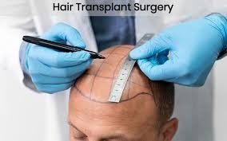
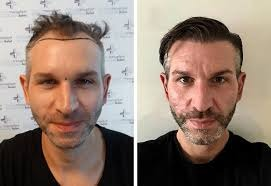

Best Hair Transplant Clinic in Chennai
Hair transplant is a permanent solution for hair loss and baldness. Our clinic uses advanced techniques to provide natural-looking results.
Hair Transplant Procedure

The procedure involves extracting healthy hair follicles and implanting them into thinning or bald areas.
Benefits of Hair Transplant
- Permanent hair restoration
- Natural appearance
- Improved confidence
- Minimal downtime

Hair Transplant Results
Patients experience fuller, natural-looking hair growth and long-lasting results.
You may also like to read about PRP Hair Treatment in Chennai for hair growth support.
To know more, book a consultation with Dr Jude Hair & Skin Clinic.